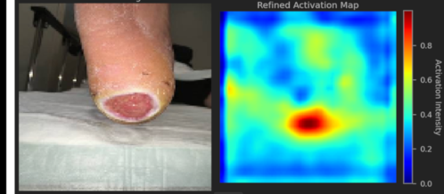
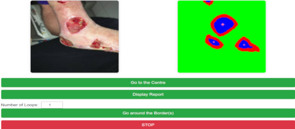
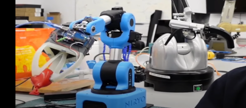
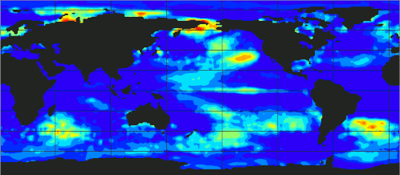
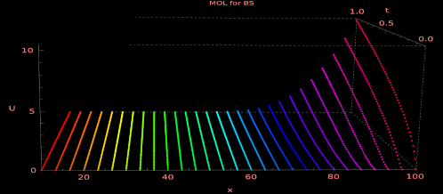

Medical AI Models
Vision Transformers for Wound Detection
Our advanced vision transformer models automatically identify and classify wounds from medical images. They assist healthcare professionals in prioritizing patients and recommending timely treatment, even in resource-limited settings. Our advanced vision transformer models automatically identify and classify wounds from medical images. They assist healthcare professionals in prioritizing patients and recommending timely treatment, even in resource-limited settings.

On-the-Go Healthcare
Mobile Application for Wound Diagnosis
This smartphone app leverages AI to provide rapid wound assessments and preliminary treatment suggestions. Users simply upload photos, helping clinicians or caregivers expedite decisions and reduce complications. This smartphone app leverages AI to provide rapid wound assessments and preliminary treatment suggestions. Users simply upload photos, helping clinicians or caregivers expedite decisions and reduce complications.
Autonomous Drones
AI for UAV Systems
Our lightweight models enable drones to navigate autonomously, perform reconnaissance, or deliver supplies with minimal human input. Ideal for agriculture, security, search-and-rescue, and more. Our lightweight models enable drones to navigate autonomously, perform reconnaissance, or deliver supplies with minimal human input. Ideal for agriculture, security and rescue, and more.

Next-Gen Prosthetics
AI-Enhanced Prosthetic Limbs
Our innovative prosthetic limbs combine neural networks with modular 3D-printed parts. They adapt in real-time to user movements, offering intuitive control and energy efficiency, especially crucial in conflict-affected regions. Our innovative prosthetic limbs combine neural networks with modular 3D-printed parts.
Personalized Suggestions
Recommender Systems
Our recommendation engines use real-time analytics to match products or content with each user's unique preferences. E-commerce sites, streaming services, and training platforms can all boost satisfaction and engagement. Our recommendation engines use real-time analytics to match products or content.
Predictive Insights
Forecasting and Analytics Tools
We develop robust analytics dashboards for sales, operations, and resource management. By leveraging advanced time-series algorithms, businesses can anticipate trends, avoid bottlenecks, and allocate resources more efficiently.

Eigenmode Decomposition
Dynamic Mode Decomposition for El Nino Discovering
DMD provides a way to identify and isolate the dynamic structures that are most important in the evolution of the system over time. These modes represent coherent structures in the flow that grow, decay, or oscillate at a fixed frequency.
Eigenmode Decomposition
Forward and Inverse PINN for the heat equation.
The blog post explores the utilization of Physics-Informed Neural Networks in solving forward and inverse problems related to the heat equation, with Residual Networks and Fourier features improving expressive capability.
Neural Networks (Pytorch)
Adversarial Attacks on CIFAR-10
Adversarial attacks on neural networks were developed by Goodfellow et al. as techniques to fool models through perturbations applied to input data. As a result, the accuracy of the trained model can drop to almost zero. At the same time, perturbed inputs are imperceptibly different to humans. In this post, I set up a trained model on CIFAR-10 and demonstrate how applied perturbations shift classifications to the false negatives.

Option Pricing (Python)
Explicit Method of Lines for European Option
Method of Lines (MOL) is a semi-analytical approach to solve PDEs where space dimension is discretised but time stays continuous. As a result, there is a system of ODEs coupled by the matrix operator, which is solved along the time. MOL seems to be good to price options because it decreases the error of estimation.
Option Pricing (Python)
Implicit Method of Lines for European Option
In this post, I present MOL for the EU option. This time it is the implicit method, which is unconditionally stable and allows for more accurate price approximation.

Universal Approximation (Pytorch)
Physics-Informed Neural Network
In Physic-Informed Learning a neural network is trained by means of the inherent physical laws encoded a priori. As a result, we obtain data-efficient approximators able to reconstruct physical states. This post shows how a neural network approximates the solution of the PDE heat equation.

Linear Algebra in Machine Learning (Python/Numpy)
Singualar Value Decomposition (SVD) in Machine Learning
SVD decomposition is the background for many ML algorithms such as PCA, dimensionality reduction, denoising data, linear autoencoders, and matrix completion. Understanding SVD will be necessary for the later post of robust PCA and matrix completion.
Linear Algebra in Machine Learning (Python/Numpy)
Robust PCA
Singular value decomposition (SVD) and principal component analysis (PCA) are powerful tools for finding low-rank representations of data matrices. In this post, we discuss a PCA variant that is robust towards outliers in the data.
Cryptocurrencies with Machine Learning
Market Capitalization of cryptocurrencies with Pandas and Plotly
The first part of the series of application of Machine Learning to financial data. Here I focus on using Pandas and show the routines of Plotly to make effective responsive visualisations.
Functional Analysis
Solutions from Introductory Functional Analysis by Kreyszig
There are solutions of functional analysis from the Kreyszig book. These exercises are an indispensable minimum for a machine learning engineer. If you spot a mistake or know a better approach, I am happy to know.
All Posts
The local Nikola rebuild includes the complete post archive already deployed on LucyNowacki.github.io. The links below cover every generated post page.